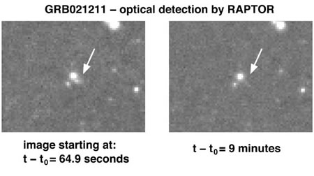

Long after the initial burst of gamma rays has subsided, gamma ray bursts (GRBs) are still observable at less energetic wavelengths. Although no formal definition exists, this smoothly varying, lower energy radiation that may be visible for several days following the GRB itself, is usually referred to as the GRB afterglow.
It is believed that the afterglow originates in the external shock produced as the blast wave from the explosion collides with and sweeps up material in the surrounding interstellar medium. The emission is synchrotron emission produced when electrons are accelerated in the presence of a magnetic field. The successive afterglows at progressively lower wavelengths (X-ray, optical, radio) result naturally as the expanding shock wave sweeps up more and more material causing it to slow down and lose energy.
X-ray afterglows have been observed for all GRBs, but only about 50% of GRBs also exhibit afterglows at optical and radio wavelengths. If no afterglow is detected at optical wavelengths, the GRB is known as a dark burst, but recent evidence suggests that even these have rapidly fading afterglow emission – you just have to be very quick to see it!

Credit: Image taken by the RAPTOR telescope and RAPTOR team at Los Alamos National Laboratory. Copyright 2002 LANL and the University of California
Much of our knowledge and our theories about GRBs comes from the study of the afterglows rather than the GRBs themselves. In particular, optical spectra of afterglows determined the cosmological origin of GRBs, and optical photometry and spectra of afterglows have proven the link between at least some GRBs and hypernova explosions.